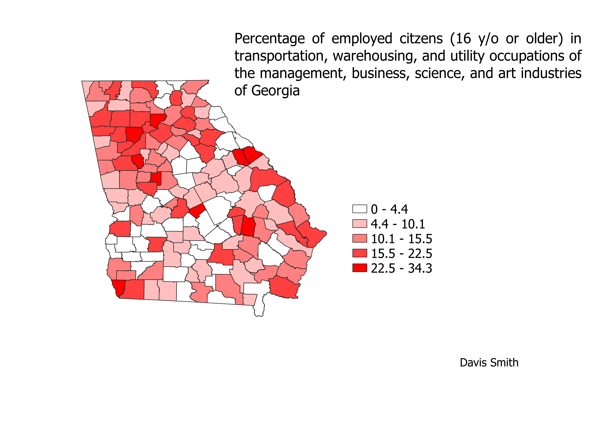

Homework 7: Census data chloropleth
Davis Smith
This map shows the percentage employed citezens who work in transportation, warehousing, and utilities for the management, business, science, and art industries of Georgia. The data ranges from 0%, which is likely from null data, to 34.3%. I mainly followed the video tutorials, but the natural break served the map well. It makes sense to make hard breaks along county lines since the data is itself defined by county. The data is pretty specific, but it only took up one column of data on the excel .csv file so I decided to work with it.

Data used for this project
CSV dataset
Link to shapefile